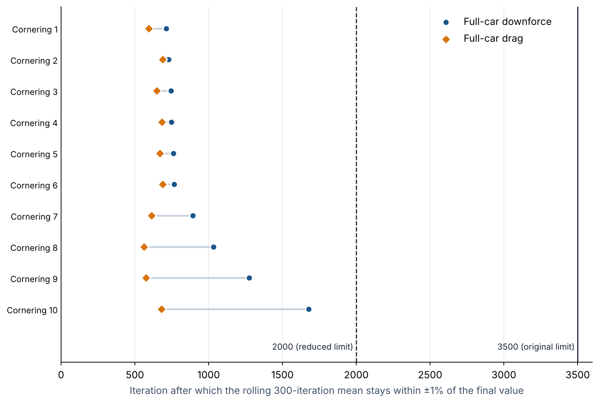
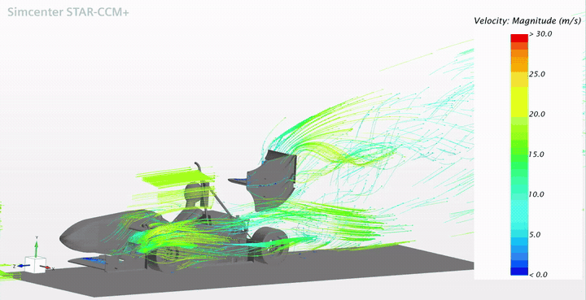

5. Design Methodology
5.1 CFD Geometry Preparation
The CFD model is designed in solidworks by simplifying the full CAD of the car. This simplification includes the removal of small details with minimal impact (such as fasteners) and simplifying geometry (such as removing mounting components). Such simplification reduces mesh complexity and computational cost, resulting in faster, more efficient simulations.
5.2 CFD Simulation Setup
We use Siemens STAR-CCM+ for CFD. Cornering simulations use a steady k-ω SST RANS turbulence model on a trimmed hexahedral mesh of about 30 million cells, with prism layers on all surfaces. The car follows a 9.125 m corner radius at 11.1 m/s, a lateral acceleration of about 1.4 g.
CFD is utilized to simulate the car’s aerodynamic performance in straight-line and cornering situations. Simulations provide numerical values to quantify the performance of the aerodynamic package, and allow us to visualize the surface pressure of and airflow around the car. The full simulation setup, including the physics models, boundary conditions, mesh settings and the cornering condition, is listed in Appendix A.
5.3 Simulation Data Processing
Simulations were originally run for 3500 iterations. Matlab is used to average the last 300 iterations of each run to get the required aerodynamic parameters.
Reducing the iteration count for cornering simulations. Cornering is the main focus of this project (Section 3), so cornering simulations make up most of the CFD work, and each one takes many hours to run on the team’s limited computing resources. To find out whether cornering simulations could be shortened without changing their results, the force monitors from 10 past cornering simulations were post-processed in Python. For each run, a rolling 300-iteration mean of full-car downforce and full-car drag was computed at every iteration and compared with the value reported from that run (the mean of its last 300 iterations). The earliest iteration after which the rolling mean stayed within 1% of the reported value was taken as the point where the run could have been stopped (Figure 2). The script used is included in the project repository (analysis/iteration-check).

All 10 cornering simulations settled within 1% by iteration 1677 at the latest, and most within 1000 iterations. With a stricter tolerance of 0.5%, the latest settling point was still only iteration 1725. For the eight runs that continued past 2000 iterations, the averaged values at iteration 2000 differed from the final values by at most 0.06 N for full-car downforce and 0.05 N for full-car drag. This is about a tenth of the smallest full-car drag difference between the front-wing designs in Table 1 (0.47 N), so stopping at 2000 iterations would not have changed any design comparison in this report. The iteration limit for cornering simulations was therefore reduced from 3500 to 2000. This cuts the number of iterations per cornering run by 43%, while keeping a margin of more than 300 iterations over the slowest run.
Scenes such as streamlines are also utilized to visualize the airflow around the car
